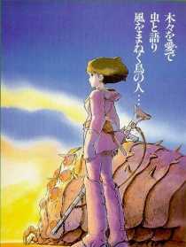

 剧情: 故事从巨型输送机坠落在风之谷开始。这架输送机是多鲁美奇亚原本用来载送工业都市“培吉特”国俘虏。娜乌西卡将夹在残骸中的少女拉丝黛儿救出，而少女却要求娜乌西卡将残骸烧毁。虽然不明其意但为了让少女安心而答应了，少女随即死去。隔天在坠落地点发现了跳动着的巨大血管群。那就是在“七日之火”将世界付之一炬的最终兵器“巨神兵”...
查看详情-
1984
-
1986
剧情: 小姑娘希达（Sheeta）是传说中“天空之城拉普达（Laputa）”王族的后裔。那曾是超越地上文明不知几千年的空中文明，但不知为何，希达的祖先离开“天空之城”，抛弃发达的科技，在地面上过起隐居的生活。然而一天，几个不明身份的男子出现在她家门口...故事由希达所坐的军队飞行船遭到空中海盗的袭击而开始。争斗中希达...
查看详情 -
1988
剧情: 小月的母亲生病住院了，父亲带着她与四岁的妹妹小梅到乡间的居住 。她们对那里的环境都感到十分新奇，也发现了很多有趣的事情。她们遇 到了很多小精灵，她们来到属于她们的环境中，看到了她们世界中很多的 奇怪事物，更与一只大大胖胖的龙猫成为了朋友。龙猫与小精灵们利用他 们的神奇力量，为小月与妹妹带来了很多神奇的景观，令她们大开眼...
查看详情 -
1989
剧情: 魔法少女一旦到了13岁就必须离开家进行为期一年的独立修行，琪琪也不例外。她带着黑猫吉吉来到一个靠海的大城市中，可是谁都不搭理她。沮丧的琪琪偶然替别人送去一件遗失品，从而获得了面包店老板娘的好感。在她的帮助下，琪琪利用自己的飞行魔法开始了快递业务。渐渐地，琪琪习惯了新的环境，工作也进行得很顺利，她结识不少新朋友。一个...
查看详情 -
1992
剧情: 第一次大战时期意大利空军的王牌飞行员波鲁科·罗森中了魔法变成了一头猪。如今他成了一名赏金猎人，专门在亚德里亚海空域阻击空中劫匪。劫匪们为了打倒罗森从美国请来了超级飞行员卡基斯。卡基斯趁罗森的飞机引擎发生故障之时将其击落。罗森把爱机送往老朋友比克罗的工厂修理，在那里遇到了比克罗的孙女菲欧。菲欧完美地修复了罗森的座...
查看详情 -
1997
剧情: 故事发生在日本的室町时代，阿席达卡(アシタカ音译 有的版本误译为“飞鸟”)所在的部落虾夷族位于日本的东北部。一天一个从西方来的邪神要侵略阿席达卡所在的村庄，这个邪神是由受了诅咒的野猪神变成的。眼看邪神步步进逼，阿席达卡挺身而出，虽然后来他打死了野猪神，但是他也因此中了邪神的诅咒，性命难保。为了化解诅咒之谜和拯救...
查看详情 -
2001
查看详情 剧情: 千寻是一个瘦小的十岁小女孩。《千与千寻》的故事从她的身上开始展开。千寻跟着父母从这个城市搬迁到另一个城市，途中所发生的一段奇妙旅程。 影片的第一幕就是千寻睁开眼，眼神里充满着失落，她怀念着以前的班级、以前的同学，手上还捧着临别时同学送她的鲜花。 他们开着车，人生地不熟的，走错路是正常的。只是他们都没有想到，他们会...
剧情: 千寻是一个瘦小的十岁小女孩。《千与千寻》的故事从她的身上开始展开。千寻跟着父母从这个城市搬迁到另一个城市，途中所发生的一段奇妙旅程。 影片的第一幕就是千寻睁开眼，眼神里充满着失落，她怀念着以前的班级、以前的同学，手上还捧着临别时同学送她的鲜花。 他们开着车，人生地不熟的，走错路是正常的。只是他们都没有想到，他们会...
-
2004
剧情: 18岁的苏菲和继母以及妹妹居住在欧洲的一个小镇中，自从父亲死后，继母凡妮就把女儿们安排到原本由父亲经营的制帽小店营生，但是苏菲的妹妹却对这并不感兴趣，于是她很快离开了制帽店；而苏菲则坚持留了下来，因为这是父亲的最爱。 一次，苏菲在看望妹妹的路上，被两个士兵截住。这个时候一个神秘男子——哈尔出现了，他用...
查看详情 -
2008
剧情: 5岁的宗介生长在海边小城，他的家就在临海的悬崖上。一天，宗介捡到了一个被海浪冲上岸的废玻璃瓶，里面有条受困的小金鱼。小金鱼名叫波尼，她是人鱼女王的女儿，偷偷驾着水母溜出来玩的时候撞进了瓶子里。宗介把波尼带回了自己家，养在塑料盆里。波尼在宗介家过得很愉快，她很喜欢宗介，宗介也喜欢她。然而，快乐的日子很快就过去了，...
查看详情